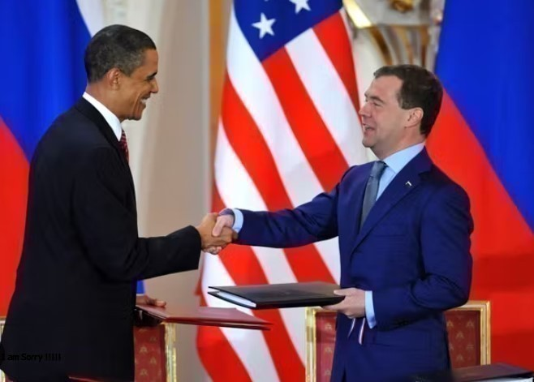
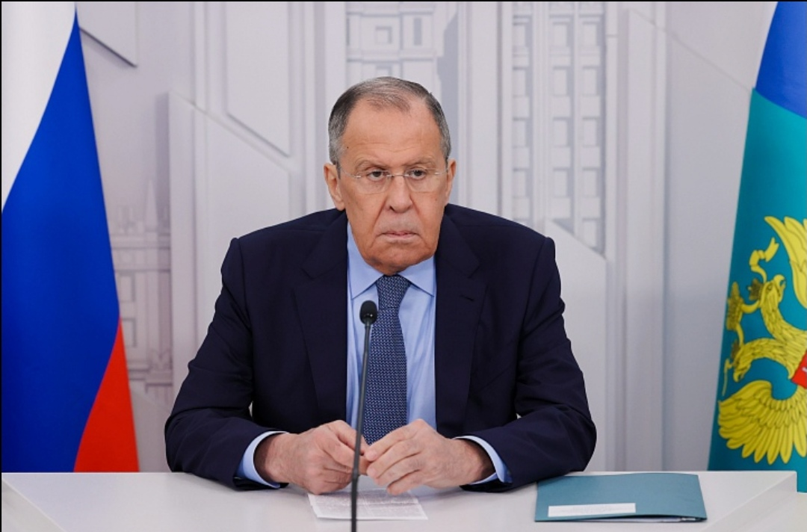
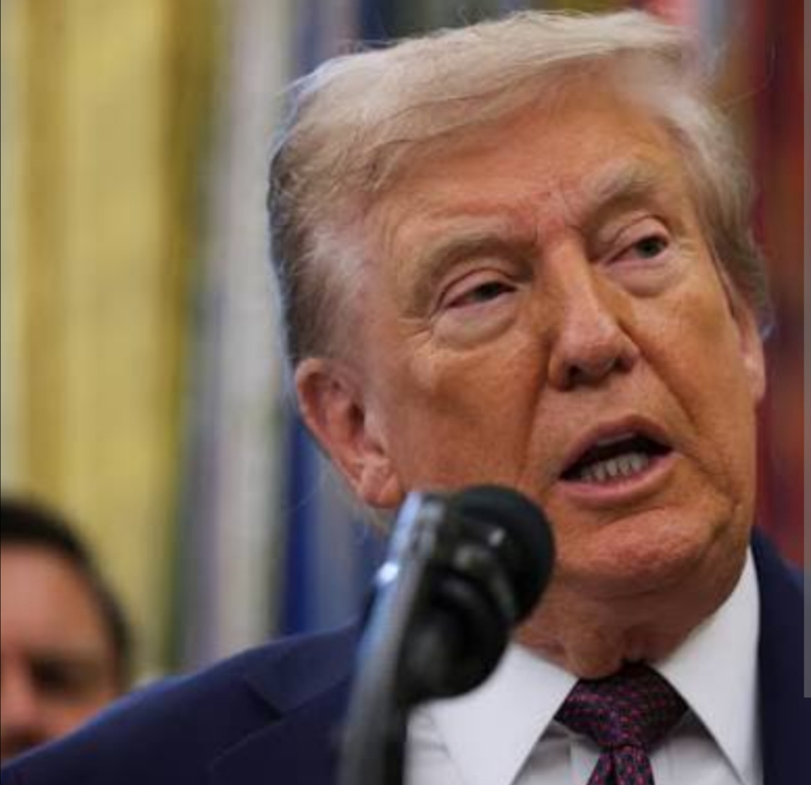

EN DIRECT,guerre en UKRAINE: la premiere journee de pourpaler....
Des pourparlers de paix entre l'Ukraine,la Russie et les Etats-Unis ont eu lieu debut fevrier a ABOU DHABI pour tenter de faire avancer une fin de guerre,
mais aucun accord concret n'a ete trouver,les desaccords restent forts sur les territoires et la securite.
les combats ainsi que les frappes russes ont continue malgre les discussions.
"La droite et l'extreme droite europeennes s'alignent dangereusement sur le trumpisme."
Ces dernieres semaines, une partie de la droite et surtout de l'extreme droite europeenne ne se rapproches des idees du trumpisme et developpe des liens
politiques internationaux.
Mais cet alignement reste prudent:plusieurs partis evitent d'afficher un soutien trop direct pour ne pas diviser leurs electeurs.Resultats la droite est
partagee entre l'influence ideologique,strategie politique et tensions internes.

Fin du traite "new start"
Le dernier accord de controle nucleaire entre Etats-Unis et Russie a expire debut fevrier 2026.
Plus de limites legales sur leurs arsenaux strategiques, risque accru de course aux armements et tensions internationales.Aucun nouvel accord n'est prevu
pour le remplacer.
Le traite permettait jusqu'ici des inspections mutuelles et fixait un plafond sur le nombre de missiles et ogives nucleaires,sa fin ouvre la porte a une
incertitude totale sur la taille et la modelisation des arsenaux nucleaires.

Ukraine en direct : Moscou critique la "diplomatie pathétique" de la France, mais se dit prêt au dialogue
Ukraine : Sergueï Lavrov critique la France, mais Vladimir Poutine se dit ouvert à un dialogue avec Emmanuel Macron. Les pourparlers à Abu Dhabi n’aboutissent qu’à un échange de 314 prisonniers. Deux blessés à Kiev après une frappe de drone, tandis que Paris maintient son soutien économique à l’Ukraine.

«Il devrait rentrer chez lui en Afrique du Sud» : nouvelle passe d’armes entre Trump et Musk
Après une brève accalmie, Donald Trump et Elon Musk ont de nouveau échangé des attaques sur les réseaux sociaux au sujet du projet de loi budgétaire soutenu par le président américain.